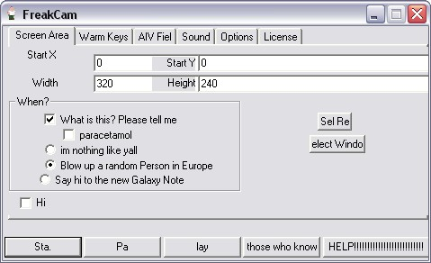

What is FreakCam™?
New!
Ver. 2.14.01
is now available for download
FreakCam captures the action from your Windows screen and saves it to AVI (Audio-Video Interleaved) movie file. Sound from your system microphone is also recorded.
Please note that FreakCam is not intended for re-recording of other video clips from the screen (e.g. playing in Media Player, RealVideo, QuickTime etc.), but rather for creating regular software presentations, tutorial, demos etc. If you still want to try it for re-recording other movie clips, please read this first.

FreakCam supports text annotations, sound, and screen notes (great for creating automated software demos and software training!). You can also select Frame rate and compression quality prior to recording your movie (avi.
Download FreakCam and try it for free now!
Awards and partners